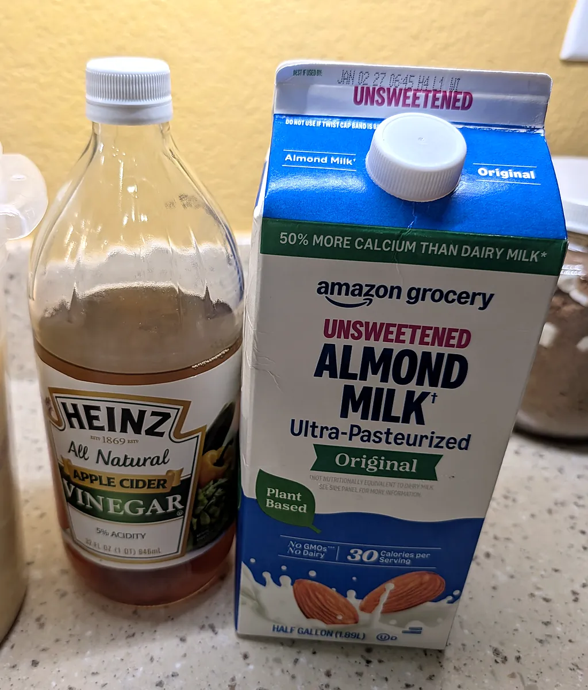
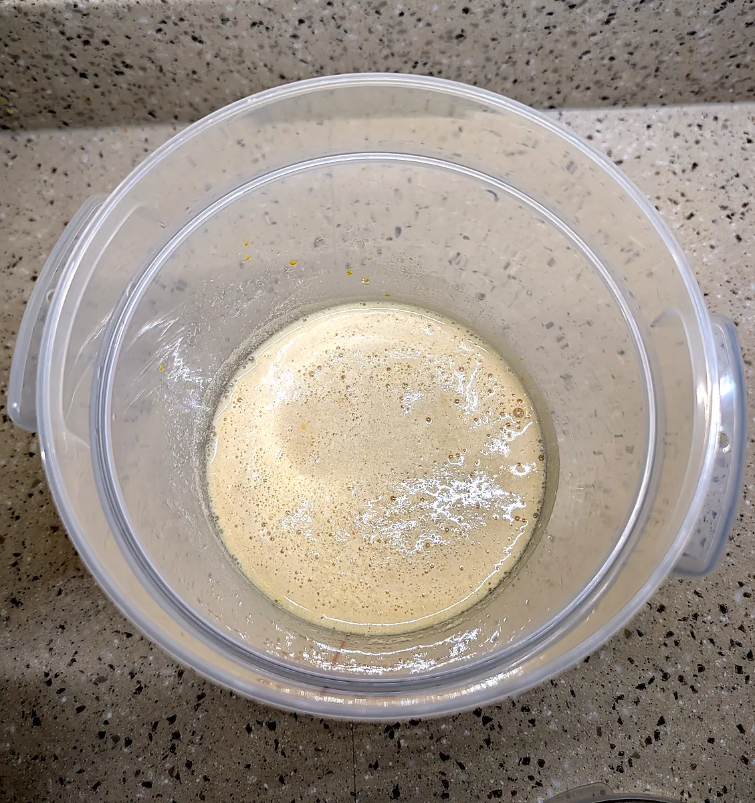
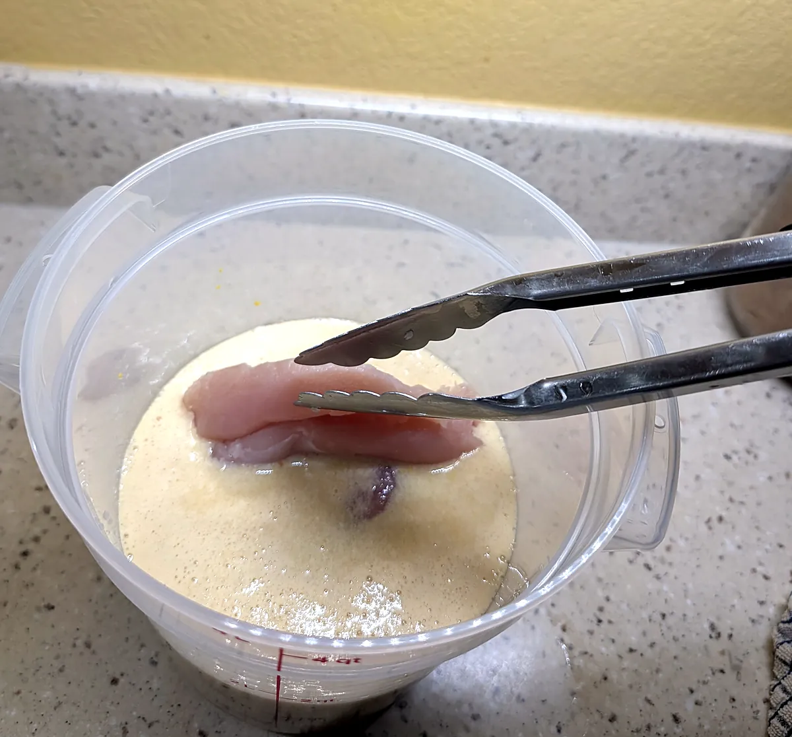
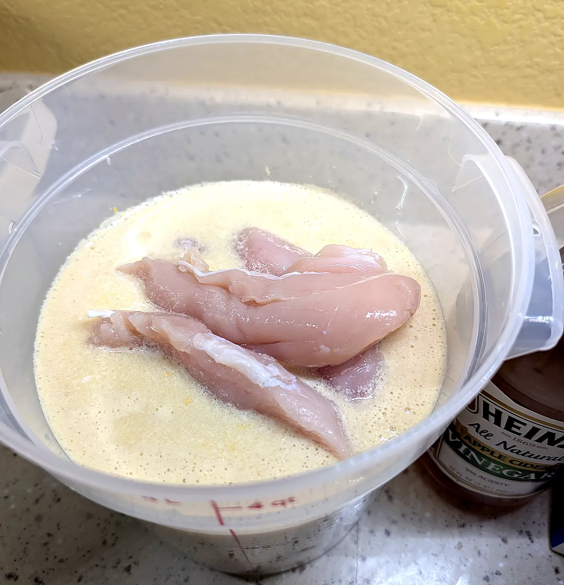
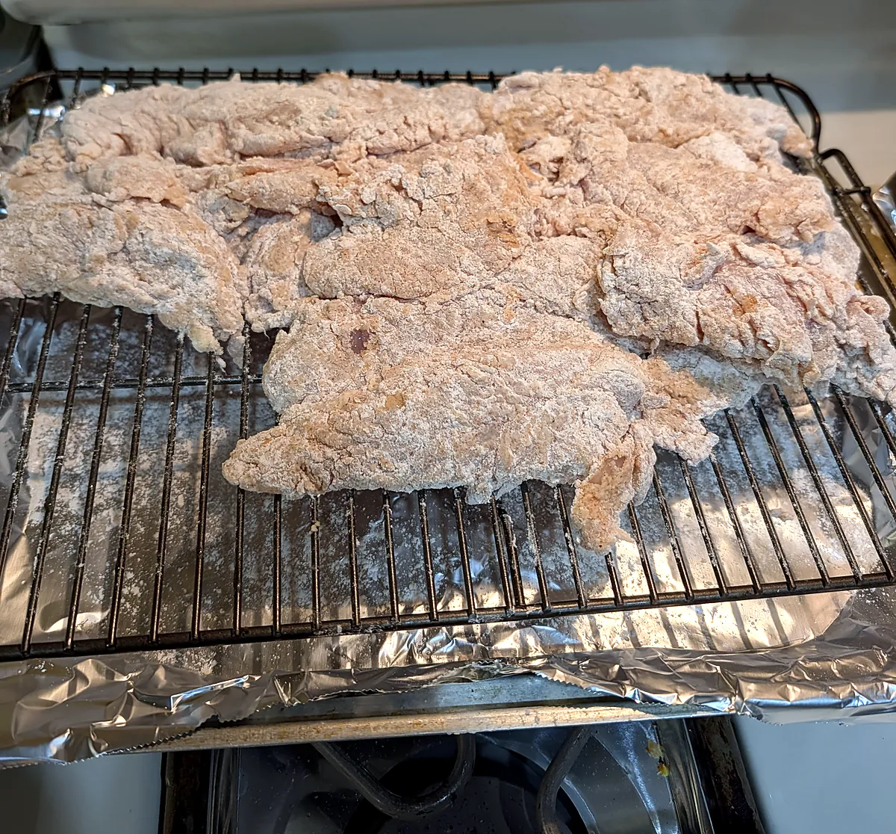
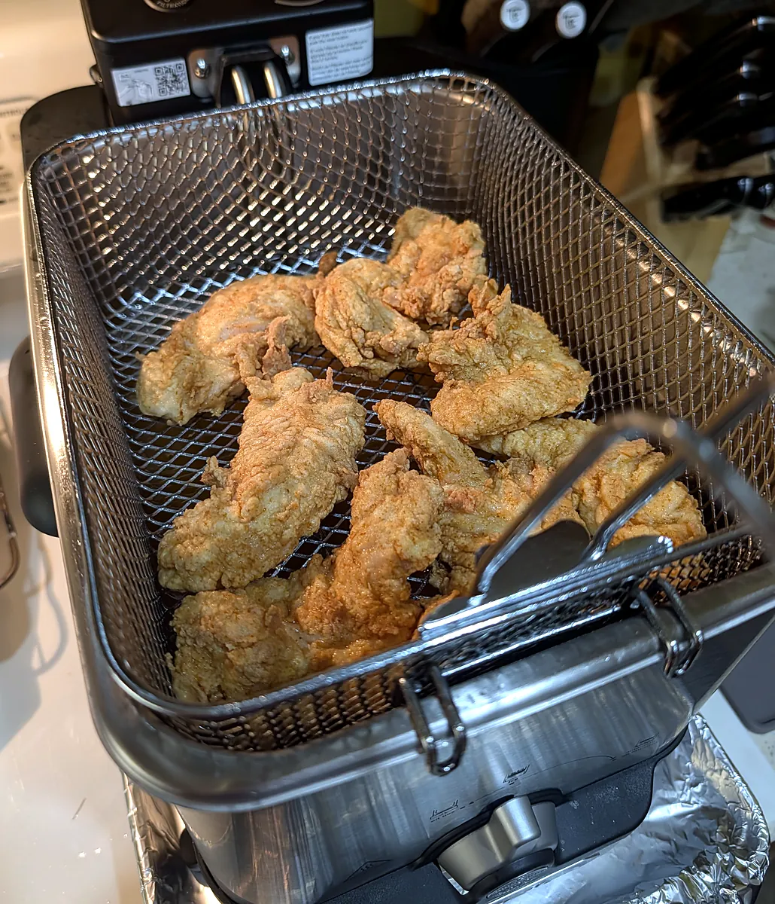

Dairy-Free Southern Fried Chicken Tenders
📸 I made this one! The step photos below show each stage from marinade to fryer.
Want the classic version? Try my Buttermilk Fried Chicken Tenders.
Ingredients
- Dairy-free buttermilk brine:
- 2 cups unsweetened almond milk
- 2 tablespoons apple cider vinegar or white vinegar
- 2 tablespoons hot sauce
- 1 tablespoon yellow mustard
- 1 teaspoon salt
- Chicken:
- 2 lbs chicken tenderloins or boneless skinless chicken breasts cut into strips
- Seasoned dredge:
- 2 cups all-purpose flour
- ½ cup cornstarch (for extra crispness without a chalky crust)
- 1½ teaspoons baking powder (creates light, airy crunch)
- 2 teaspoons paprika (or smoked paprika for a smoky twist)
- 2 teaspoons garlic powder
- 2 teaspoons onion powder
- 1 tablespoon kosher salt (or about 2½ teaspoons fine table salt)
- 1½ teaspoons black pepper
- 1 teaspoon cayenne pepper (optional, for heat)
- ½ teaspoon dried thyme or oregano
- ½ teaspoon mustard powder
- For frying:
- Neutral high-smoke-point oil (like canola, vegetable, or peanut oil)
Steps
- Make the dairy-free buttermilk: Whisk the almond milk and vinegar together in a large bowl or container (photo 1). Let it sit for 10 minutes at room temperature until it thickens and slightly curdles, then stir in the hot sauce, yellow mustard, and 1 teaspoon of salt (photo 2).

Photo 1: Almond milk and apple cider vinegar make the dairy-free “buttermilk.” 
Photo 2: The marinade whisked together and slightly thickened. - Marinate the chicken: Dip each chicken strip into the marinade with tongs (photo 3), then leave them all fully submerged (photo 4). Cover and refrigerate for at least 3 hours, or overnight for the most tender results.

Photo 3: Dip each tender so it is fully coated. 
Photo 4: Tenders soaking in the marinade before chilling. - Prepare the dredge: In a large, shallow dish, whisk together the flour, cornstarch, baking powder, and all the spices (paprika, garlic powder, onion powder, thyme or oregano, mustard powder, salt, pepper, and cayenne).
- Chef's trick for extra crunch: Drizzle 2 to 3 tablespoons of the liquid marinade from the chicken bowl into the dredge. Rub it in with your fingertips until small, craggy clumps form. These clumps stick to the chicken and turn into those extra-crunchy ridges when fried.
- Coat the chicken: Pull a chicken strip out of the marinade, letting only the heaviest excess drip off (you want it wet so the flour sticks). Drop it into the dredge and use your hands to firmly press and squeeze the flour onto the chicken, embedding the shaggy clumps into the meat.
- Let the coating set: Shake off any loose flour and set the strip on a wire rack or parchment-lined baking sheet. Repeat with the remaining pieces and let them rest for 10 minutes so the coating sets (photo 5).

Photo 5: Dredged tenders resting so the coating sets. - Heat the oil: Fill a deep fryer, or a deep, heavy-bottomed skillet or Dutch oven, with 2 to 3 inches of oil. Heat until a deep-fry thermometer reads 350°F (175°C).
- Fry: Carefully lower 3 or 4 pieces into the hot oil. Don't overcrowd the pan, or the oil temperature will drop and make the chicken greasy. Fry for 4 to 5 minutes, flipping halfway through, until the crust is deep golden brown and the internal temperature reaches 165°F (74°C) (photo 6).

Photo 6: Frying at 350°F until deep golden brown. - Drain and serve: Move the tenders with tongs to a wire rack set over a baking sheet to drain (photo 7). Avoid paper towels, since trapped steam makes the bottom crust soggy.
Photo 7: Drained, crispy and ready to eat.
Pro tips
- Keep your oil steady: Watch the heat between batches and let the oil come back up to 350°F before adding the next pieces.
- Keep them warm: For a large batch, place the wire rack of finished strips in a 200°F (95°C) oven while you fry the rest.